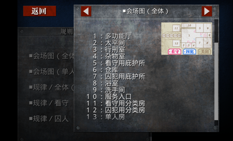

「不知从何处，流淌出令人熟悉的旋律。
我到底是在哪里，听过这个旋律？」
——「『囚人的旋律』，是加入了诅咒的旋律哦」
【问题描述】
被诅咒的监狱里流淌着囚人们的歌谣。
将罪恶的青春全部抹杀殆尽。
“看守”执掌“囚犯”的生杀大权。
“囚犯”中藏着可以杀掉“看守”的恶魔。
这就是，将人性扭曲的，“监狱游戏”。
监狱游戏的参加者被分为了看守和囚犯，两侧各n人。举行监狱游戏的地点在一个被改造过了的大仓库一样的地方
，里面有两排共2n个房间，服务入口侧的是囚犯的房间，行刑室侧的是看守的房间。如下图所示。

相邻的看守与囚犯的房间之间可以通过对讲机互相沟通，但是声音会被处理，无法辨别。两侧的分类房中都有一排
各n扇门，从左到右编号为1～n。进入一扇门之后会有一条狭长、黑暗，而且弯弯曲曲的走廊通向房间。由于其特
殊的构造，看守的i号门对应房间未必就是囚犯的i号门对应的房间。因此，想在这个监狱游戏中胜出，了解门与门
之间的对应关系是很有必要的。接下来的问题就和监狱游戏没有太多关系了。我们令a[i]表示看守的第i扇门对应
囚犯的哪一扇门。令图G为有n个节点的图，编号为1～n。对于满足1≤i<j≤n的一对i和j，如果有a[i]>a[j]，那么
在G中编号为i和j的节点之间连一条边。得到的图G被称为逆序图。对于图G=(V,E)，非空点集S∈V是一个独立集当
且仅当对于任意两个点u,v∈V，不存在(u,v)∈E。而S是一个覆盖集当且仅当对于任意点v?S存在点u∈S满足(u,v)
∈E。我们在意的是，图G中有多少个点集既是独立集又是覆盖集。出于某种不知名的原因，被迫参加监狱游戏的大
家的安危和这个问题的答案有关。拜托了，请一定要求出这个方案数。